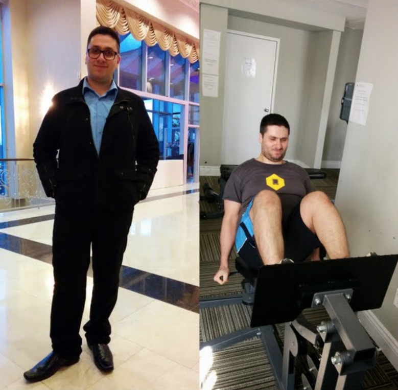

‚ö†Ô∏èThis live essay is in Beta. It mostly works and is awesome, but you might find a button or two that is not active. Sign up to the email list at the bottom for updates and to get notified when it is finished and released. ‚úåü躂ö†
What do we want? Abs. When do we want them? Now. This app will give you the map of how to get there. If you follow it, you will get abs.
Note⚡️ - This is a live essay, or an essay + calculators. Enter your information, it will customize itself for you. If you already understand the principles, click here to use the calculator only. If this is your first time, Welcome! and ready Player One.
How to get abs
To have visible abs, you need two things. You need:
Abdominal muscles
A low enough level of body fat so your abdominal muscles are not completely covered by your abdominal fat.
That is it. You do not need to do a thousand crunches or drink weird potions üîÆ. Abs connect your ribs to your hips and pelvis along your front and sides. When you contract your abs, they pull your ribs and hips closer, bending your spine to the front or sides. If you can sit up or lean forward, you have abs. ✅ Check off the first item!
Sidenote for Science üß™ üëàüèº You can click these to show and hide more detailed scientific knowledge.
It is true that if you have low levels of body fat, but underdeveloped core muscles, that you will have abs, but they might not look that impressive. Doing the right core exercises can help you have better abs. Join the email list at the bottom of this essay, and I will send you a list of the best core exercises as known by science. Hint, it is not the crunch.
You already have abs. However our abs are covered by a few layers of tissue. Simplified, descending from outside to inside you have:
a layer of skin
a layer of fat tissue
a layer of connective tissue called facia
abs
The skin and facia are thin but the layer of fat tissue can be very thick. If you can't see your abs currently, you need a lower level of body fat.
So what level of body fat is needed to see abs? Let's talk about what is fat, and how body fat works.
But first, let's customize this essay for you. It is a live essay ⚡️ after all. What is your name?
Hey there. Thanks for reading! Ok back to the learning, how does fat work.
Fat is good. Too much fat is bad
You might be thinking, "ok I need less fat. Let's get rid of all my fat, then my abs will really show." But fat doesn't just cover our abs. It is amazing and wonderful and we need fat! Fat is good!
Over half of our brain is fat. Fatty acids contribute to our nerve development and function. We need fat to develop hormones, which serve as the body’s chemical signals and controls between different types of tissues. Fat provides cushioning for our internal organs, like shock absorbers.
Too much fat is bad. Like many things in life, moderation in all things. Too little fat and you will die. Way too much fat and you will also die. Just right? You, Player One, you will have awesome abs.
So what is fat and why is it useful?
Ok you say. Fat is good. But how much do I need?
This is where we need to get specific. The way we use the word 'fat' means a lot of different things.
In the context of abs, fat can mean 3 things.
Fat = The substance your body uses for fuel. üî•
Fat = The cells and tissue where you body stores that fuel. ⛽️
Fat = The state of having too much stored fuel. üëéüèª
What is fat the fuelüî•?
Fat is a building block of life, a macro nutrient along with protein and carbohydrates. Your body breaks down these molecules as fule. These moleculres are called triglycerides and if you took them out of your body, they would look something like olive oil or peanut oil.
Your body gets a lot of energy when it breaks down fat. More than carbohydrates or protein. And fat has great energy density which means it can store a lot of energy in a little space. When your body needs energy it breaks down some of the fat you have stored in your fat cells in your fat tissue stored.
Sidenote for Science üß™
Triglycerides are made up of three (tri) fatty acid chains and a spine of glycerol holding those three together. When your body breaks down triacylglycerol into energy the glycerol molecule goes to the liver to be made into glucose which your body can use for energy, while the three fatty acid chains go to other cells, where the mitochondria break them down for energy by a process called beta oxidation. Mitochondria are the power house of the cell! I knew that would be important some day. Fatty acids are made up of the elements carbon, hydrogen, and oxygen. The most common type of fatty acid in organisms (like humans) is triacylglycerol.
What is fat the organ where we store fuel? ⛽️ How does your body store fat?
Where you store your energy (called fat) is an organ. It is also called fat, fat cells, or more accurately adipocytes. Adipocytes plus some connective fibers, make up the fat tissue where you store energy. This fat tissue is also known as adipose.
Fat cells are located all around our body but the primary location is under our skin around our midsections.
When you body has an excess of energy, like right after you eat, your body stores some of it as triglycerides or fatty acids in your fat cells.
You can think of a fat cell as a tiny little bag that holds a drop of fat. When you are storing lots of fat molecules (the fuel), the cells are really big and full, and when you are not, they are small and deflated. An empty fat cell is small, while a full fat cell can be 4 times the size of an empty fat cell.
Sidenote for Science üß™
Side Note For Science: White fat cells are large cells that are 15 percent cell structure (a small nucleus, cytoplasm, hormone creators etc) and 85% one large fat droplet. Fatty acids are stored in that droplet in a semi-liquid form.
What is fat the state of having too much stored fuel? üëéüèª
When you consistently eat more energy than you use, your body keeps that energy, and stores it in fat molecules in your fat tissue. When all the fat cells in your fat tissue are full of fat molecules, this makes your layer of fat thick and obscures your abs. This is the state of being 'fat' or the state of having too much stored fuel. üëéüèª
How does your body use up stored fat?
So when your body needs energy, it 'burns fat' by taking fat molecules or triglycerides out of a fat cell, breaking them down, and sending them to your other cells to be broken down for energy. It is called 'burning' fat because fat breaks down via oxidization in your mitochondria. (powerhouse!) Your body combines the fat with oxygen and you get energy, CO2, and water.
So what happens to my fat cells when I burn up their fat storage?
Just like your body doesn't get rid of your stomach when it is empty, your body doesn't get rid of your fat cells when they are empty. Your fat cells just get really small.
Let's bring this back to abs. We need to reduce the amount of fatty acids we have stored in our fat cells, so those fat cells shrink and don't obscure our wonderful already present abdominal muscles.
Can I reduce the amount of fat in my fat cells just around my waist?
No. Crunches don't get you abs. Your body is a complete system. If it needs more energy, it is going to get that from anywhere in the system it wants. We can't force our body to just burn fat from a single area. We have to reduce the level of stored fat in the whole system.
Sidenote for Science üß™
There is some evidence in studies that as you decrease your body fat in general, working out a specific area of your body could lead to a TINY bit more fat being lost from that area. But we are talking tiny amounts, that don't lead to effective spot reduction. Good evidence that spot reduction is not effective is tennis players. They always have one arm that is significantly more musclar, but that arm in studies is not leaner. So spot reduction could be a thing, but only in the context of overall body fat reduction. Focusing on overall fat reduction is orders of magnitude more effective than trying to spot reduce fat.
So how much fat do I need to be healthy & happy and still see my abs?
We now understand that we need to reduce the amount of fatty acids we have stored in our fat cells, so those fat cells shrink and don't obscure our wonderful already present abdominal muscles.
So how much do we need to reduce our fat stores? What level of fat is good?
We measure fat in pounds as a unit of mass. However we can't say "You need 20 pounds of fat to be healthy and see your abs". Instead of a absolute number, it all depends on the ratio of fat to muscle.
A note for non US üá∫üá∏ or UK üá¨üáß readers: I will add an international switch that will switch the whole essay to the better measurement system soon. Right now we are stuck in pounds. Sorry.
A really big person has naturally bigger abs, and so could have a larger amount of stored fat and still have great abs, while a really small person has smaller abs the would be completely covered and obscured by the same amount of stored fat.
The solution to this is to use body fat percentage. Body fat percentage is the best way to represent what ratio of fat to muscle will allow your glorious abs to be seen.
Body Fat Percentage
Body fat percentage is a measure of how much of your whole body is fat.
To calculate body fat percentage, we take your total fat mass, divided by your total body mass, multipled by 100 to make it a percent.
( fat mass / total body mass ) * 100
Your fat mass, measured in pounds, is all the fat in your body. This includes both essential fat (remember brain ü߆good, hormones üßû‚Äç‚ôÇÔ∏ègood) and storage fat. Your total body mass is made up of your fat mass + your lean mass.
Lean mass is everything that is not fat. Muscles + bones + organs + water = lean body mass.
Low body fat percentage = more lean body mass.
High body fat percentage = more fat mass.
How to calculate body fat percentage?
Let's calculate an example, then look at examples with pictures!
To make calculations easy, let's take a 200 pound man. He has a great fitness level and body composition. He is made up of with 20 pounds of fat and 180 pounds of lean body mass.
The calculation for body fat % is: ( 20 pounds fat mass / 200 pounds total mass ) * 100
20/200 = .1 * 100 = 10% body fat.
We use our body weight to calculate body fat percentage but the weight number doesn't matter. The only thing that matters is the ratio of fat to muscle.
Wait, so it doesn't matter how much I weigh?
Let me repeat that. Your total body weigh does not matter if you want to get abs. What matters is the ratio of how much fat you have vs how much muscle you have.
A pound is just a unit of mass. If weigh more or less pounds, is that good or bad? We can't tell in isolation. Weight alone doesn't tell us anything.
Sidenote for Science üß™
A pound can also be a unit of weight. A pound-force is a unit of weight, used to measure your weigh on Earth with gravity providing the force. A pound-mass is a unit of mass, as defined by the kilogram. So you still have mass in space, even if you have no weight.
Also, functionally, body weight does matter. NFL linemen want more mass so they can knock the other guys down. An Olympic pole vaulter wants less mass so he can throw himself higher in the air. But for abs alone, weight doesn't matter.
Real Life Examples of why Body Fat Percentage matters
Let's meet two real men, D.K. and Ali. These two fine gentlemen each have exactly the same mass / weight. They both weight 228 pounds. Is that good or bad? I repeat, we don't know. Which one has abs? We can't tell from just the weight.
Lucky for you, Player One, we have pictures and additional info which allow us to estimate body fat percentage levels.
This is D.K. Metcalf, an NFL wide reciever for the Seattle Seahawks.
D.K. weighs 228 pounds. How much of that 228 pounds is muscle and how much is fat?
Well, as you can see from the image, most of him is muscle. He is preeetty much all muscle.
Using the picture and what we know about professional athletes, we can estimate he is at 6% body fat. (We will talk about estimating body fat levels from pictures later, it is super useful, and we are going to do it for you too!)
Let's do the math. X pounds of fat / 228 total body mass = .05
We can re-arrange that to get 228* .6 = pounds of fat. 228 *.06 = 13.68 pounds of fat.
Imagine a 10 pound sack of flour + a few extra cups. Spread across his entire whole body, D.K. has just over 13 pounds of fat. he is getting close to only having essential fat left.
Now let's look at Ali who also weighed the exact same 228 pounds? He posted his inspiring story about getting in shape. These are his starting photos. Ali is an average guy.

Ali weighs 228 pounds. How much of that 228 pounds is muscle? How much of that 228 pounds is fat? Because he doesn't show his abdomen this is harder to estimate, but from additional info in his post we can estimate he is around 35% body fat.
If we do the math 228 * .35 = 79.8 pounds of fat.
That is a checked airplane luggage bag (50 pounds) + three 10 pound bags of sugar.
So weighing in at 228 pounds is not good or bad for abs. That totally depends on what your body composition is. How much muscle do you have? How much fat do you have?
The difference between the D.K. and Ali is body fat percentage.
Now let's compare Annie to Erin. What if I told you both women weighed the same 152 pounds. Is that good or bad? You're a smart one Player One, you didn't fall for the same trick twice. We know weigh alone tells us nothing. What matters is body composition.
In this case, you could be the same weight and be a hardworking, genetic freak of nature and look like world CrossFit champion Annie Thorisdottir. Or you could be average like Erin.
Annie Thorisdottir is estimated to be around 15% body fat.
152 * .15 = 22.8 pounds of fat.
Erin we can estimate to be around 30% body fat.
152 * .30 = 45.6 pounds of fat.
Body fat levels difference between men and women
You may notice that Annie and D.K. both have incredible muscles and visible abs while having very different body fat percentages. Women naturally carry more essential body fat, about 10% more. So you can take any body fat percentage for a guy, add 10% and a gal at that body fat percentage would have roughly the same level of fitness and the same level of visibility on her abs.
What percentage body fat do you need to see abs?
Now you might be saying to yourself, "OK I get it. If weight doesn't matter, I should focus on body fat percentage. So what body fat percentage do I need to see my abs?"
For guys, abs begin showing under 14% body fat.
For gals, abs begin showing under 22% body fat.
If you want killer abs, for guys they are clearly visible and well defined at 10% body fat.
Killer abs for girls, are clearly visible and well defined at 20% body fat.
This is a live essay. ⚡️ Let's customize it more to you.
What is your gender?
Want great looking abs? Since you are ?, you should shoot for ?% body fat.
Let's recap what you need for abs.
✅ Abdominal muscles
?% body fat.
We now have our destination. ?% body fat. We know where we need to go, so let's create your map of how to get there. Maps are only useful if you know:
a.) where you are going, and
b.) where you are right now.
We need to calculate your starting point.
What is your current body fat percentage point?
We need to measure your body fat percentage. That way we can figure out how much stored fat you need to use up to get to ?% body fat.
Remember body fat percentage is ( fat mass / total mass ) * 100
How to measure total mass
This one is easy. Step on any scale and it will calculate your mass by taking the force you are putting on the scale due to gravity and use that to calculate your mass.
Sidenote for Science üß™
A pound can refer to both a unit of mass and a unit of weight. A pound-force is a unit of weight, commonly used to measure your weigh on Earth with gravity providing the force. A pound-mass is a unit of mass, as defined by the kilogram. So if you are in space you still have mass, even while you have no weight because there is no gravity. Because we humans are usually in earth gravity we refer to pounds interchangably. When your scale says 150 that could be either weight or mass since they are the same. Back to the abs!
What is your current mass in pounds? ⚡️
The average ? weight/mass in the USüá∫üá∏ is ?. At A, you are ? the average. (Remember weight/mass alone tells us nothing and doesn't matter for abs.)
We now have one part of our equation. Let's fill that in.
Player One body fat percentage = ( fat mass X / A ) * 100
Now we need to measure your fat mass.
How to measure fat mass?
There are many ways to measure fat mass. They all have their pros and cons. I have researched the accuracy and availability of each. I won't go into all the details here but if you are interested, put your email in the box at the end of this essay and I will notify you when I release that essay.
Different methods to measure body fat are:
Estimate with pictures✅
Waist measurementsüëéü誂öñÔ∏è
Caliper measurementsüë∑ü躂Äç‚ôÇÔ∏è
Electrical impedance scale✅
Calculator from tape measurementsüë∑ü躂Äç‚ôÇÔ∏è
Bod Podüíµüíµ
Dexa Scanüíµüíµ
Hydrostatic weightingüíµüíµüíµ
4 compartment analysisüíµüíµüíµ
Fat removal and measurement ☠️
#10 is the most accurate way to measure fat mass but this would kill you. ☠️ Don't do this. Waist measurements are not accurate enough alone. Caliper and tape measurements are too hard. Bod Pod, Dexa, Hydrostatic, and 4 comartment are too expensive. That leaves us with impedance and estimate with pictures.
The easiest way is to use a electrical impedance scale. Fat is more reistance to electric currents than muscle, so the scale can use that to estimate your body fat levels.
If you don't have an impedance scale, the next easiest way, which you can do right now, is to visually estimate it using comparison charts and progress pictures. It can be accurate enough to point us in the right direction.
Do you know your current body fat percentage?
How to visually estimate body fat percentage
I scoured the internet for the best body fat comparison charts. Fair warning lots of pictures of people with various levels of body fat ahead. You don't have to be exactly accurate. Be honest. Guys usually think they are leaner than they really are, girls the opposite.
You currently weigh A pounds, with your body fat percentage of Y%. That means you have B of body fat and pounds of lean body mass.
What is your goal?
What is your goal body fat %? For males your abs pop at 10% body fat, but you can set any goal you desire.
How to get to goal % body fat
You are at Y%, with a current weight of X with Z pounds of lean body mass and A pounds of body fat.
Your goal is goal% body fat, with a goal weight of with Z pounds of lean body mass and C pounds of fat.
We want to keep all your lean body mass. We assume you keep all Z pounds of lean mass, and just decrease your fat until you are at gender% body fat. More on how to keep your muscle mass later.
To get to goal% bf, you need to burn off B pounds of fat. (Current A - Goal C = B to lose)
Let's update your checklist! What you need for abs.
✅ Abdominal muscles
Go from Y% body fat to ?% body fat, by using up B pounds of fat.
The next question is "How can I decrease my body fat percentage?" quickly followed by "How long will this take?" We can answer both these questions with the formula to reduce body fat.
How to decrease body fat percentage
To decrease your body fat percentage you need to keep or increase your lean body mass (muscles good) and reduce the amount of stored fat you have.
To decrease the amount of stored body fat you need to consistently be in an energy deficit.
To increase or maintain your lean body mass you need to eat enough protein, lift weights, and sleep enough.
Put those all together and there are 4 things to decrease your body fat percentage:
Be in an energy deficit.
Lift weights to keep and gain muscle.
Eat enough protein to repair and build your muscles.
Sleep enough to repair and build your muscles and keep you stress hormones down..
Let's tackle the first one.
How to be in an energy deficit
This one is a simple concept, but difficult to do. You need to balance how much energy your body uses, with home much energy you consume.
Energy Expenditure > Energy Intake
Let's first calculate how much energy you use on average.
How to calculate your energy expenditure
Your body uses or burns energy all the time to keep you alive and happy. If you did absolutely nothing in a day, your body would still burn a lot of energy keeping you healthy, pumping your blood and repairing your cells.
This is called your base metabolic rate, or BMR.
Let's Calculate your BMR
We can use a formula to calculate what your BMR is.
What is your age?
What is your height in feet?
and your remaining height in inches
We will use the weight that you entered earlier, of weight fill pounds.
Your estimated BMR is bmrAnswer
If you did nothing in a day, you body would burn bmrAnswer calories keeping you alive.
However, we don't just sit in bed all day. (Although sometimes we wish we could).
We move and cook, and talk, and fidget. All the non-exersize energy you use in a day above what you need to just keep yourself alive (BMR) is categorized as Non-Exercise Activity Thermogenesis or NEAT.
Intentional exersize like walking, lifting weights or playing soccer is categorized as Exercise Activity Thermogenesis or EAT. (Which is weird because it is like the opposite of eating, but whatever scientists you do your names how you want)
There is also some energy used in breaking down your food. This is known as Thermic Effect of Food or TEF. It has a small enough effect (no you can't pound just celery and lose weight) we are going to ignore it for right now.
BMR is easy to calculate as it largely depends on the size of your body, but NEAT and EAT and TEF are harder to calculate as they are unique to each person and to each day. So scientists have developed a activity multiplers. You estimate your activity multiplier based on standards (see below) then you that to your calculated BMR, and it estimates your BMR, NEAT, EAT, and TEF up in one pretty bow üéÄ. This is called you Total Daily Energy Expenditure or TDEE. That number is the energy you burn in a day.
Let's pick your Activity Multiplier
Need help picking your activity level? üëáüèª
Click to show the Estimating Activity Level Section
How to estimate your Activity Level
Studies have shown that we all overestimate how much we are active. So read the descriptions, pick where you think you are, then move down one level. For example if you think you are Moderately Active, chose Lightly Active. Since it is an estimate it just needs to be close and then you can see what the results are and tweak it.
Sedentary 1.15
You don’t intentionally exercise at all. Get up, go to work, come home, eat dinner, relax.
Lightly Active 1.2
On average, you walk for exercise about 30 minutes a day. Or you are running or lifting weights fro 15 minutes a day.
Moderately Active 1.4
If I was looking for you on a weeknight, I would call the gym. 50 minutes of vigorous exercise a day. Or about one hour and 45 minutes of walking (for exercise, not going around your house) per day. Most people do not do this.
Very Active 1.6
You move vigorously for your work (think something like construction or yardwork), or you workout every single day for more than an hour. If you were to get this level of activity only walking, it would be a nearly impossible four hours and 15 minutes of walking (again, for intentional exercise) a day.
Extra Active 1.8
Hey there Michael Phelps. Almost no one does this. This means every single day you are working out hard for an hour and a half. Or you are a professional speed walker.
Your BMR x Your Activity Multiplier gives your Total Daily Energy Expenditure or TDEE.
bmrAnswer x Activity Multiple =
We estimated your energy expenditure, so we can fill in half of the equation.
Energy Expenditure < Energy Intake
< ?
Now let's figure out your energy intake.
How to estimate your energy intake
We measure the amount of energy we intake and use in calories. A calorie is the amount of energy it takes to heat a kilgram of water 1 degree.
Most people don't like this, but the best way to know your energy intake is to track how many calories you are eating. That is the only way to know for sure how much energy your are taking into your body.
This does not mean that you are going to have to track everything you eat for the rest of your life like some food accountant. But it does mean that you need to track it for a while. Recording everything (and I mean everything) you eat or drink is the single best way to accurately gauge your energy intake.
You can use an app like MyFitnessPal or record it in a paper notebook, but you have to track everything you eat. This is what allows you to have confidence that the process is working. The scale can go up and down but you know you are losing body fat because you are tracking exactly what you are eating and you are eating the appropriate amount of energy for your current goal.
Let's say for example you calculated your TDEE to be . This means that if you consume deficit result example calories, you would be in a deficit of deficit
How being in a caloric defict burns body fat
If you are consistently intaking less energy than you expend, your body will send signals to your fat cells that is needs energy. Your body breaks down the fat stored there. Do this consistently and your body will use up the pounds of fat you want to get rid of.
Where does the fat go when it is burned?
Carbon, Oxygen, and Hydrogen make up a large part of our bodies.
Chemical formula for water is H2O. Chemical formula for carbon dioxide is CO2. The average chemical formula for human fat is C55H104O6.
Fat + Oxygen = Carbon Dioxide + Water
10 pounds of fat becomes -> 8.4 pounds of CO2 gas, and 1.6 pounds of water.
How many calories are in 1 pound of fat?
Pure fat has 9 calories per gram. Think Crisco. If you burn 1 gram of pure fat, it will put off 9 calories of energy, along with .84 grams of CO2 and .16 grams of H2O.
There are 453.59 grams per pound. So 452.5 * 9 = 4,072.5. The max number of calories a pound of fat can contain is 4073 calories. If you had a pound of Crisco, it would have 4,072 calories in it.
However, as we learned above, body fat is not pure fat. You have lots of other stuff in there like cell walls, protein, fluid, cell nucli and other tissues. So the calorie content of body fat is going to be less than that of pure fat.
Body fat tissue is around 87% fat.
Using those values, we can conclude that a pound of body fat contains anywhere from 3,436 to 3,752 calories.
In 1958, a scientist named Max Wishnofsky studied this quite a lot and concluded that the caloric equivalent of one pound of body fat was 3,500 calories.
We now have all the information we need to figure out how long it will take you to get to bf goal% body fat!
How long will it take to get to bf goal% body fat
We know how many pounds of fat you currently have. A pounds.
We know how many pounds of fat you will have at bf goal% body fat. C pounds
We know how many pounds of fat you have to burn off as energy and CO2 and H2O. B
We know how many calories are in a pound of fat. 3,500
This means we know know how many calories you need to burn off. 3,500 * B = calories calories to use up.
With that information we can now figure out 3 additional inter-related things. You can pick a date you want to be at bf goal % body fat. That will tell you how many calories you should eat per day, which we can use to calculate your daily caloric deficit. Or you can pick how many calories you want to eat in a day, and we can use that to calculate your caloric defict and the date at which you will arrive at your goal.
Since these 3 are linked, we can pick the amount of energy you want to eat and it will calculate the deficit and the date you will reach your goal by. Or you can pick a date you want to achieve this goal by and it will calculate the deficit needed, or you can pick the deficit and it will tell you the daily energy intake and the ateyou will achieve that goal by.
A very important question, do you know how much energy you are eating each day?
Daily Calories you eat / want to eat:
Your TDEE of X minus your deficit of Y gives you Z calories a day.
Daily caloric deficit:
Your caloric deficit is not calculated%. General advice is to pick a 25% deficit.
Date you will hit your goal by:
It will take you X days to reach your goal.
It will take you X weeks to reach your goal.
It will take you X months to reach your goal.
It will be daysinsert in X days.
There are X days until summer June 20, 2022 üèù.
Max Fat Loss
There is a upper limit to how fast you can lost body fat. Your body doesn't take all the fat from one cell or one pound of fat, it takes a little bit of energy from everywhere. Studies show that the max amount of energy you can use is 31 calories from each pound of fat.
This means that you can multiple your pounds of fat x 31, to get the max caloric deficit your body can sustain and not start using lean mass as energy as well.
For you this max caloric deficit is X calories per day.
Warning, this is your MAX. This is not normal. This is probably not healthy. But it is the most aggressive caloric deficit you can sustain while not having your body metabolize your own muscles for energy. Remember also that as you fat mass decreases, this max caloric deficit decreases, which is one of the reasons why losing fat when you have less fat mass can be tricky.
This also leaves you little room to get enough protein.
At X pounds total body weight, you need grams of protein a day. Since protein has 4 calories per gram, that is calsfromProtein calories from just protein.
With your TDEE of tdee - max caloric deficit of X that leaves you daily at Max calories a day. If calsfromProtein of those come from protein that means you have just Y calories left to consume in a day.
Remember max isn't always better.
But remember, there are 4 parts to reducing your body fat!
Be in an energy deficit.
Lift weights.
Eat enough protein to repair and build your muscles.
Sleep enough to repair and build your muscles and keep you stress hormones down..
Simply put, to lose just fat and not fat and muscle you need to workout, lifting weights, to remind your body you need the muscles. You need to eat enough protein to give the body fuel for building and maintaining muscles. And you need to sleep to allow your body to recover and keep your muscles.
If you only work on the energy deficit, you will lose muscle mass as well as body fat. This is not good as you will lose the very abs you are trying to get to show.
How to lift weights
Here are links to 2 basic weight lifting programs.
How to eat enough protein
Research shows that you need .82 grams of protein per pound of total body mass.
At X pounds total body weight, you need grams of protein a day.
How to get enough sleep
Sleep is critical to losing weight and gaining muscle, and having an enjoyable and productive life. If you are not getting enough sleep, you need to get more of it.